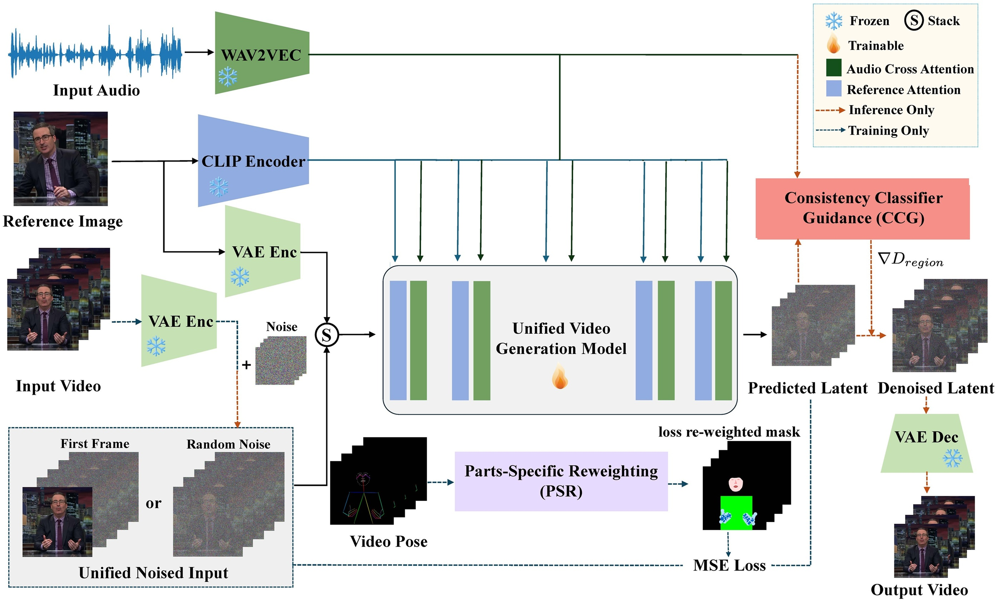
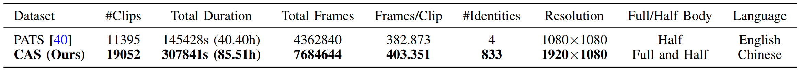
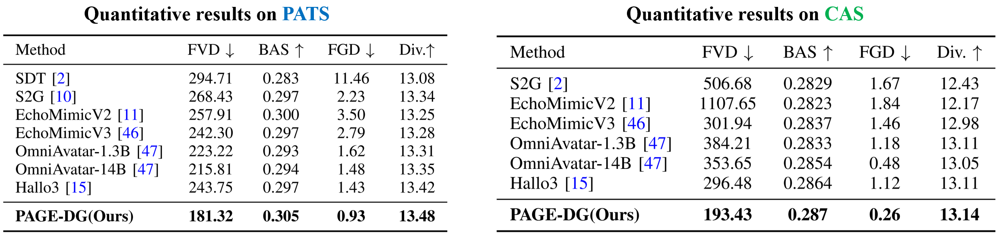

Audio is enabled — click play to watch with sound.
PATS
CAS
Audio is enabled — click play to watch with sound.



@article{Wang2026PAGE,
author = {Yabiao Wang and Jiafu Wu and Yicheng Xu and Teng Hu and Shengzhe Zhou and Yanxiao Sun and Jiangning Zhang and Ying Tai and Yong Liu and Ming-Hsuan Yang},
title = {PAGE: Parts-Aware GuidancE for Co-Speech Gesture Portrait Video Generation},
journal = {IEEE Transactions on Circuits and Systems for Video Technology (TCSVT)},
year = {2026},
volume = {},
number = {},
pages = {},
doi = {}
}